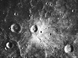
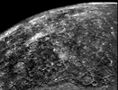
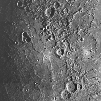
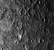

Mercury

Mercury is the closest planet to the Sun and the eighth largest. Mercury is slightly smaller in diameter than the moons Ganymede and Titan but more than twice as massive.
orbit: 57,910,000 km (0.38 AU) from Sun
diameter: 4,880 km
mass: 3.30e23 kg
The New Solar System
Summarizes what we've learned from interplanetary explorations in the last 25 years. My primary reference for The Nine Planets.
In Search of Planet Vulcan
An account of the non-discovery of a planet inside Mercury's orbit. A much more interesting tale than you might imagine.
In Roman mythology Mercury is the god of commerce, travel and thievery, the Roman counterpart of the Greek god Hermes, the messenger of the Gods. The planet probably received this name because it moves so quickly across the sky.
Mercury has been known since at least the time of the Sumerians (3rd millennium BC). It was given two names by the Greeks: Apollo for its apparition as a morning star and Hermes as an evening star. Greek astronomers knew, however, that the two names referred to the same body. Heraclitus even believed that Mercury and Venus orbit the Sun, not the Earth.
Mercury has been visited by only one spacecraft, Mariner 10. It flew by three times in 1974 and 1975. Only 45% of the surface was mapped (and, unfortunately, it is too close to the Sun to be safely imaged by HST).
Mercury's orbit is highly eccentric; at perihelion it is only 46 million km from the Sun but at aphelion it is 70 million. The perihelion of its orbit precesses around the Sun at a very slow rate. 19th century astronomers made very careful observations of Mercury's orbital parameters but could not adequately explain them using Newtonian mechanics. The tiny differences between the observed and predicted values were a minor but nagging problem for many decades. It was thought that another planet (sometimes called Vulcan) might exist in an orbit near Mercury's to account for the discrepancy. But despite much effort, no such planet was found. The real answer turned out to be much more dramatic: Einstein's General Theory of Relativity! Its correct prediction of the motions of Mercury was an important factor in the early acceptance of the theory.
Until 1962 it was thought that Mercury's "day" was the same length as its "year" so as to keep that same face to the Sun much as the Moon does to the Earth. But this was shown to be false in 1965 by doppler radar observations. It is now known that Mercury rotates three times in two of its years. Mercury is the only body in the solar system known to have an orbital/rotational resonance with a ratio other than 1:1 (though many have no resonances at all).
This fact and the high eccentricity of Mercury's orbit would produce very strange effects for an observer on Mercury's surface. At some longitudes the observer would see the Sun rise and then gradually increase in apparent size as it slowly moved toward the zenith. At that point the Sun would stop, briefly reverse course, and stop again before resuming its path toward the horizon and decreasing in apparent size. All the while the stars would be moving three times faster across the sky. Observers at other points on Mercury's surface would see different but equally bizarre motions.
Temperature variations on Mercury are the most extreme in the solar system ranging from 90 K to 700 K. The temperature on Venus is slightly hotter but very stable.
 Mercury is in many ways similar to the Moon: its surface is heavily cratered and very old; it has no plate tectonics. On the other hand, Mercury is much denser than the Moon (5.43 gm/cm3 vs 3.34). Mercury is the second densest major body in the solar system, after Earth. Actually Earth's density is due in part to gravitational compression; if not for this, Mercury would be denser than Earth. This indicates that Mercury's dense iron core is relatively larger than Earth's, probably comprising the majority of the planet. Mercury therefore has only a relatively thin silicate mantle and crust.
Mercury's interior is dominated by a large iron core whose radius is 1800 to 1900 km. The silicate outer shell (analogous to Earth's mantle and crust) is only 500 to 600 km thick. At least some of the core is probably molten.
Mercury actually has a very thin atmosphere consisting of atoms blasted off its surface by the solar wind. Because Mercury is so hot, these atoms quickly escape into space. Thus in contrast to the Earth and Venus whose atmospheres are stable, Mercury's atmosphere is constantly being replenished.
 The surface of Mercury exhibits enormous escarpments, some up to hundreds of kilometers in length and as much as three kilometers high. Some cut thru the rings of craters and other features in such a way as to indicate that they were formed by compression. It is estimated that the surface area of Mercury shrank by about 0.1% (or a decrease of about 1 km in the planet's radius).
 One of the largest features on Mercury's surface is the Caloris Basin (right); it is about 1300 km in diameter. It is thought to be similar to the large basins (maria) on the Moon. Like the lunar basins, it was probably caused by a very large impact early in the history of the solar system.  That impact was probably also responsible for the odd terrain on the exact opposite side of the planet (left).
In addition to the heavily cratered terrain, Mercury also has regions of relatively smooth plains. Some may be the result of ancient volcanic activity but some may be the result of the deposition of ejecta from cratering impacts.
A reanalysis of the Mariner data provides some preliminary evidence of recent volcanism on Mercury. But more data will be needed for confirmation.
Amazingly, radar observations of Mercury's north pole (a region not mapped by Mariner 10) show evidence of water ice in the protected shadows of some craters.
Mercury has a small magnetic field whose strength is about 1% of Earth's.
Mercury has no known satellites.
Mercury is often visible with binoculars or even the unaided eye, but it is always very near the Sun and difficult to see in the twilight sky. There are several Web sites that show the current position of Mercury (and the other planets) in the sky. More detailed and customized charts can be created with a planetarium program.
 ... Sun
... Mercury
... Venus
... Data
... Sun
... Mercury
... Venus
... Data